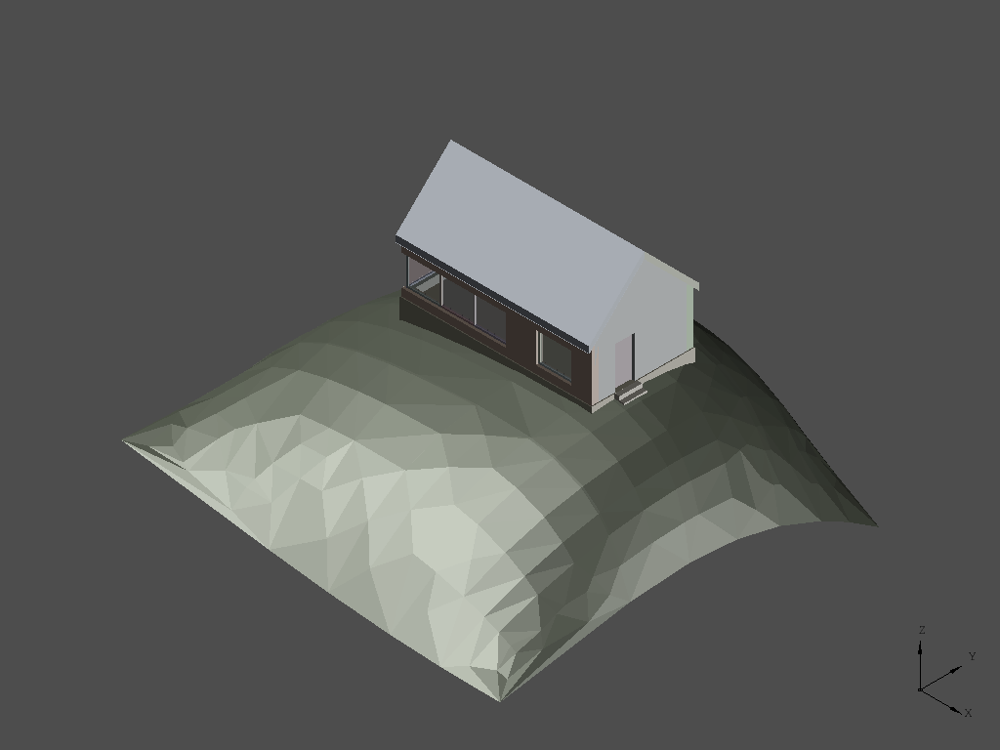
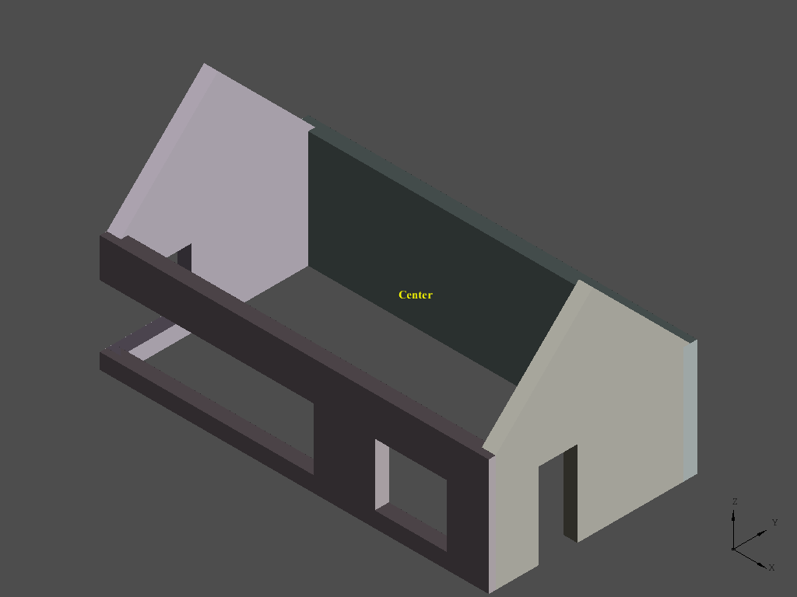
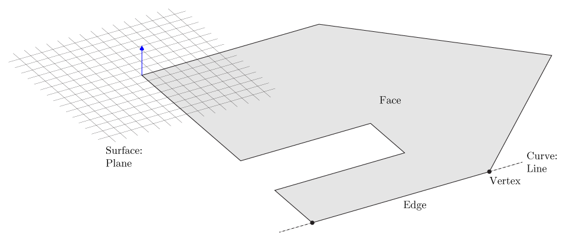
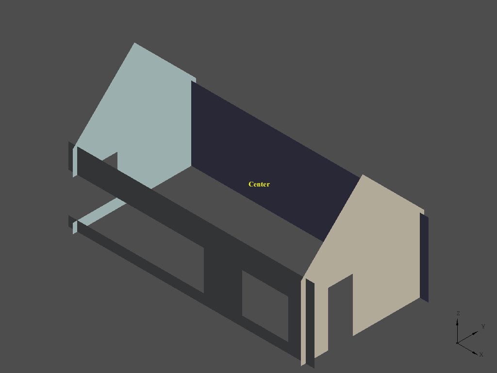
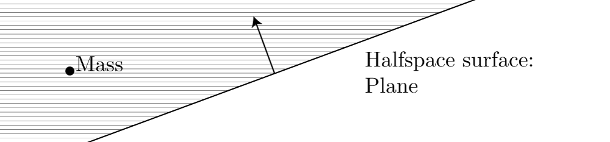
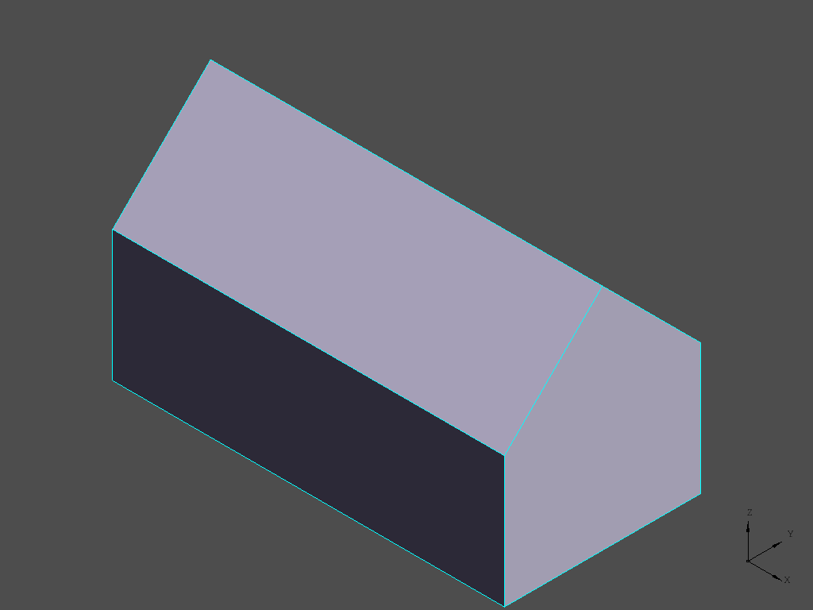

Using IfcOpenShell and pythonOCC to construct new geometry
[This article contains several snippets of source code for illustration purposes, the full source code can be downloaded at the bottom]
In this short exercise we are going to build on top the IfcOpenHouse model. It is one of the first IFC models entirely built using program code. It is a nice model, but it has a few shortcomings: for example, it does not define an IfcSpace instance that describes the interior space bounded by the walls and roof. In this exercise we are going to model the geometry of this space automatically from the geometry of the bounding elements and calculate the interior volume of the model.

The IfcOpenHouse model as imported into a regular CAD application
Getting started
# Specify to return pythonOCC shapes from ifcopenshell.geom.create_shape()
settings = ifcopenshell.geom.settings()
settings.set(settings.USE_PYTHON_OPENCASCADE, True)
# Initialize a graphical display window
occ_display = ifcopenshell.geom.utils.initialize_display()
# Open the IFC file using IfcOpenShell
ifc_file = ifcopenshell.open("IfcOpenHouse.ifc")
# Display the geometrical contents of the file using Python OpenCascade
products = ifc_file.by_type("IfcProduct")
for product in products:
if product.is_a("IfcOpeningElement"): continue
if product.Representation:
shape = ifcopenshell.geom.create_shape(settings, product).geometry
display_shape = ifcopenshell.geom.utils.display_shape(shape)
if product.is_a("IfcPlate"):
# Plates are the transparent parts of the window assembly
# in the IfcOpenHouse model
ifcopenshell.geom.utils.set_shape_transparency(display_shape, 0.8)
Importing an IFC model is pretty straightforward. References are obtained to instances of IfcProduct subtypes. These classes include all building elements that have a 3d representation. This also includes IfcOpeningElements, the mechanism used to extract openings for windows and doors, typically from walls. The geometry of these elements is not imported (note that continue means continue to next element in the iteration). IfcOpenShell can be used to create a 3d shape for the representation of the building element. Note that in IFC geometry is decomposed of IfcRepresentationItems of varying complexity. IfcOpenShell hides this complexity and provides a uniform Boundary Representation (BRep) for every product.

The IfcOpenHouse model as imported in the pythonOCC environment
Filtering elements
However, for this exercise we are not interested in all types of products. Initially we are only interested in the four walls of the building.
# Get a list of all walls in the file
walls = ifc_file.by_type("IfcWall")
# Create a list of wall representation shapes
# and compute the bounding box of these shapes
wall_shapes = []
bbox = OCC.Bnd.Bnd_Box()
for wall in walls:
shape = ifcopenshell.geom.create_shape(settings, wall).geometry
wall_shapes.append((wall, shape))
OCC.BRepBndLib.BRepBndLib_Add(shape, bbox)
ifcopenshell.geom.utils.display_shape(shape)
# Calculate the center/average of the bounding box
bounding_box_center = ifcopenshell.geom.utils.get_bounding_box_center(bbox)
print "Bounding box center: %.2f %.2f %.2f" % (
bounding_box_center.X(),
bounding_box_center.Y(),
bounding_box_center.Z())
occ_display.DisplayMessage(bounding_box_center, "Center", update=True)

The walls of the IfcOpenHouse model and it's bounding box center point
In addition to simply obtaining 3d shapes for the walls, the middle point of the interior space is determined by calculating the average of the geometrical bounding box. This middle point is necessary later on to determine which sides of the walls to base the internal space volume on.

The distinction between topology and geometry. In which a Face is a composed of a Wire on a base surface. The Wire consists of Edges and Vertices. The Edges have an underlying curve
In open cascade and most other geometry kernels there is a distinction between geometry and topology, for more information about these concepts read the following blog post.

The inner faces of the bounding walls
Extracting faces
# Now create halfspace solids from the inner faces of the wall
halfspaces = []
for wall, shape in wall_shapes:
topo = OCC.Utils.Topo(shape)
for face in topo.faces():
surf = OCC.BRep.BRep_Tool.Surface(face)
obj = surf.GetObject()
assert obj.DynamicType().GetObject().Name() == "Geom_Plane"
plane = OCC.Geom.Handle_Geom_Plane.DownCast(surf).GetObject()
if plane.Axis().Direction().Z() == 0:
face_bbox = OCC.Bnd.Bnd_Box()
OCC.BRepBndLib.BRepBndLib_Add(face, face_bbox)
face_center = ifcopenshell.geom.utils.get_bounding_box_center(face_bbox).XYZ()
face_normal = plane.Axis().Direction().XYZ()
face_towards_center = bounding_box_center.XYZ() - face_center
face_towards_center.Normalize()
dot = face_towards_center.Dot(face_normal)
if dot < -0.8:
ifcopenshell.geom.utils.display_shape(face)
face_plane = plane.Pln()
new_face = OCC.BRepBuilderAPI.BRepBuilderAPI_MakeFace(face_plane).Face()
halfspace = OCC.BRepPrimAPI.BRepPrimAPI_MakeHalfSpace(
new_face, bounding_box_center).Solid()
halfspaces.append(halfspace)
We need to determine which of the faces of the wall volumes points towards the middle point so that these can become part of the bounding volume of the interior space. OpenCascade has several types of shapes: Solids, Shells, Faces, Wires, Edges and Vertices and compounds of these. The shape returned by IfcOpenShell for the walls is probably a Solid, but we do not really need to now that. We can simply iterate over the faces that bound the solid. Then we can obtain a reference to the underlying surface of that face. Since the IfcOpenHouse model only consists of planar geometry we know that the surface of the face conforms to a plane. If the direction of the normal vector perpendicular to the plane points towards the middle point we know that it is one of the faces we are interested in. This is done by calculating the dot product of the two vectors, read more on wikipedia. Note that the 0.8 constant is rather arbitrary. Technically also some of the faces of the window opening subtractions point towards the middle point of the space.

A halfspace solid is an infinite solid bounded by some surface, in this case an infinite plane
Note that faces do not necessarily need to be bounded. From the plane equations that are obtained by iterating over the faces of the bounding walls we can obtain halfspace solids. You could imagine that the intersection of all these halfspace solids forms the volume of our interior space. But first a similar trick is done to obtain the bottom faces of the roof elements.
# Create halfspace solids from the bottom faces of the roofs
roofs = ifc_file.by_type("IfcRoof")
for roof in roofs:
shape = ifcopenshell.geom.create_shape(settings, roof).geometry
topo = OCC.Utils.Topo(shape)
for face in topo.faces():
surf = OCC.BRep.BRep_Tool.Surface(face)
plane = OCC.Geom.Handle_Geom_Plane.DownCast(surf).GetObject()
assert obj.DynamicType().GetObject().Name() == "Geom_Plane"
if plane.Axis().Direction().Z() > 0.7:
face_plane = plane.Pln()
new_face = OCC.BRepBuilderAPI.BRepBuilderAPI_MakeFace(face_plane).Face()
halfspace = OCC.BRepPrimAPI.BRepPrimAPI_MakeHalfSpace(
new_face, bounding_box_center).Solid()
halfspaces.append(halfspace)
Creating the space volume
Unfortunately creating a bounded solid from only infinite solids does not work very well in OpenCascade. Hence we start off with a bounded solid that we know will surely fit the entire volume of our space. The halfspaces created from the products in the IFC files are subtracted from this box.
# Create an initial box from which to cut the halfspaces
common_shape = OCC.BRepPrimAPI.BRepPrimAPI_MakeBox(
OCC.gp.gp_Pnt(-10, -10, 0),
OCC.gp.gp_Pnt(10, 10, 10)).Solid()
for halfspace in halfspaces:
common_shape = OCC.BRepAlgoAPI.BRepAlgoAPI_Common(
common_shape, halfspace).Shape()
ifcopenshell.geom.utils.display_shape(common_shape)
# Calculate the volume properties of the resulting space shape
props = OCC.GProp.GProp_GProps()
OCC.BRepGProp.BRepGProp_VolumeProperties(shape, props)
print "Space volume: %.3f cubic meter" % props.Mass()

The resulting space volume as generated from the bounding walls and roof
This example only scratches the surface of the possibilities of Python, OpenCascade and IfcOpenShell. OpenCascade provides a wide variety of shape analysis and fixing tools and descriptive measures can be extracted, such as the space volume in this example.
Download source code
This is a tutorial for an old version of PythonOCC. Download for pythonOCC <= 0.6 or pythonOCC 0.16.0
Comments